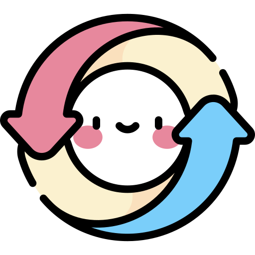

Facilitar el intercambio y la donación segura, digna y transparente de insumos esenciales de primera infancia y cuidado del adulto mayor, conectando a familias y cuidadores para dar una segunda vida a artículos en buen estado, optimizar recursos familiares y reducir el desperdicio.
Ser la plataforma digital comunitaria de referencia en la redistribución y donación de insumos de cuidado, reconocida por consolidar una red segura, solidaria e incluyente que promueva el consumo responsable, la empatía y la dignidad en cada etapa de la vida.
Dignidad, confianza, solidaridad y respeto.